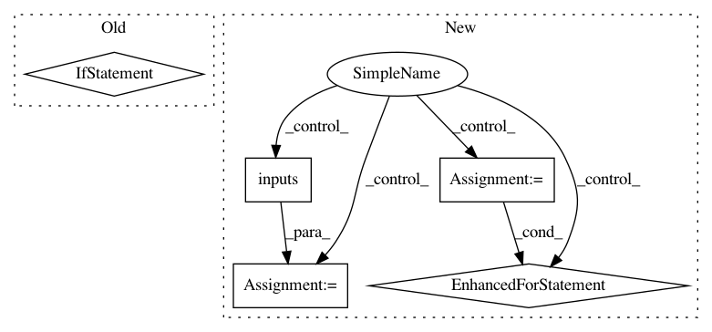

4eb5897b172b7157632e7bee83624646142740ae,data_provider/shadownet_data_feed_pipline.py,,,#,314
Before Change
)
if __name__ == "__main__":
test code
// test crnn data producer
producer = CrnnDataProducer(
dataset_dir="/media/baidu/Data/Sequence_Recognition/Synth_90K/90kDICT32px",
)
producer.generate_tfrecords(
save_dir="/media/baidu/Data/Sequence_Recognition/Synth_90K/tfrecords",
step_size=100000
)
After Change
flags="train"
)
train_images, train_labels, train_images_paths = train_dataset.inputs(
batch_size=32
)
count = 0
image_path_set = set()
with tf.Session() as sess:
while True:
try:
images, image_labels, image_paths = sess.run([train_images, train_labels, train_images_paths])
for path in image_paths:
image_path_set.add(path)
count += len(image_paths)
except tf.errors.OutOfRangeError:
print(count)
print(len(image_path_set))
In pattern: SUPERPATTERN
Frequency: 3
Non-data size: 5
Instances
Project Name: MaybeShewill-CV/CRNN_Tensorflow
Commit Name: 4eb5897b172b7157632e7bee83624646142740ae
Time: 2019-03-22
Author: luoyao@baidu.com
File Name: data_provider/shadownet_data_feed_pipline.py
Class Name:
Method Name:
Project Name: Microsoft/nni
Commit Name: f7b7edac5b9e329ffdda30d710f68db71d08e065
Time: 2020-11-22
Author: 38930155+chicm-ms@users.noreply.github.com
File Name: nni/common/graph_utils.py
Class Name: TorchModuleGraph
Method Name: _build_graph
Project Name: Microsoft/nni
Commit Name: 5d2a59fd4cf708d285d0db8ff3522c9156d2c4a9
Time: 2020-08-12
Author: 49771382+zheng-ningxin@users.noreply.github.com
File Name: src/sdk/pynni/nni/_graph_utils.py
Class Name: TorchModuleGraph
Method Name: unpack_manually